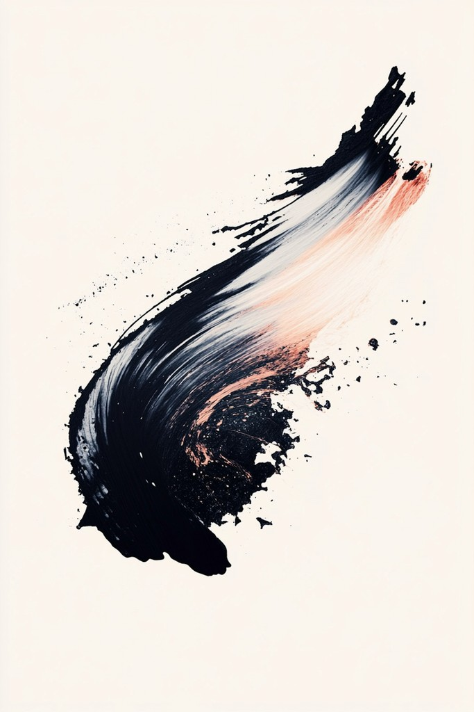
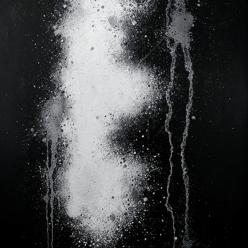
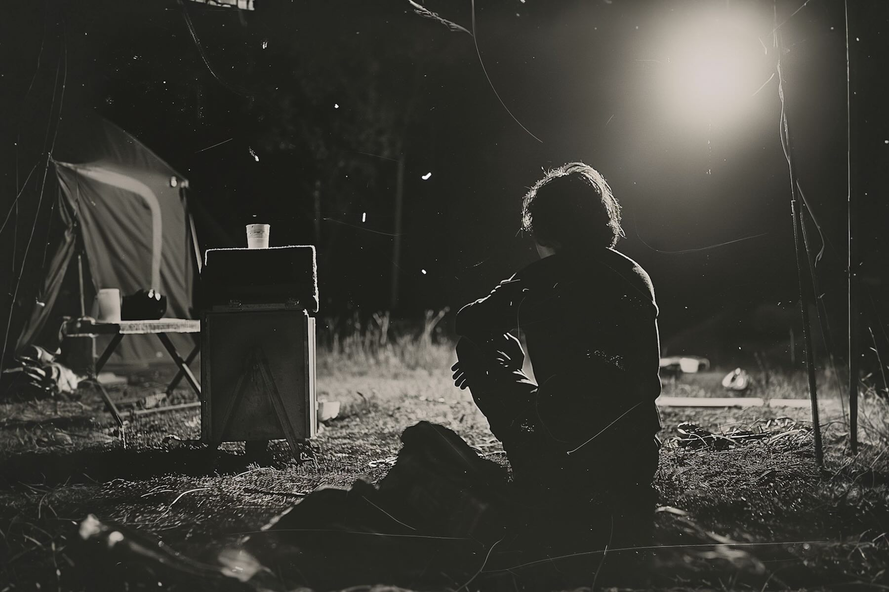
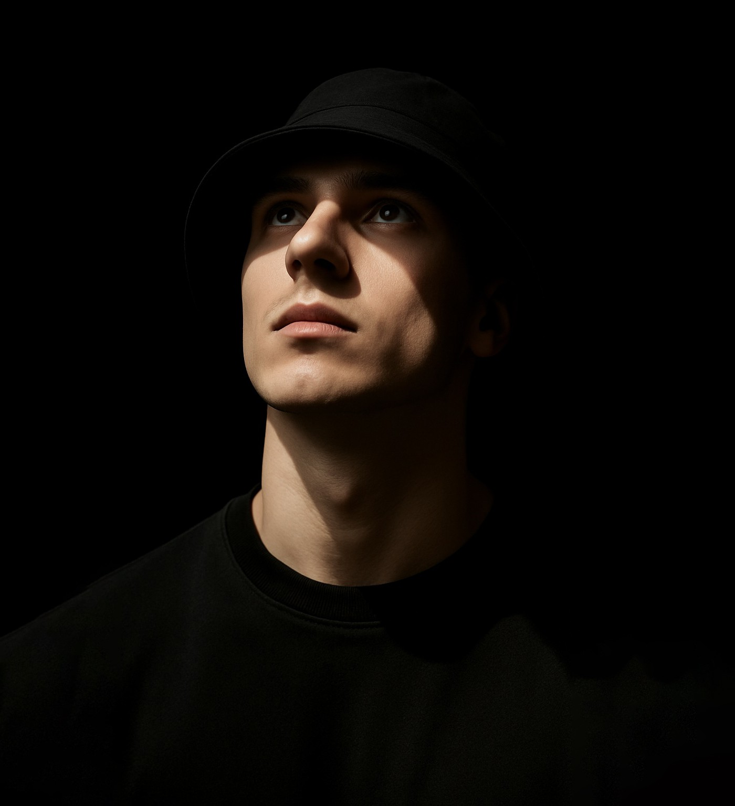
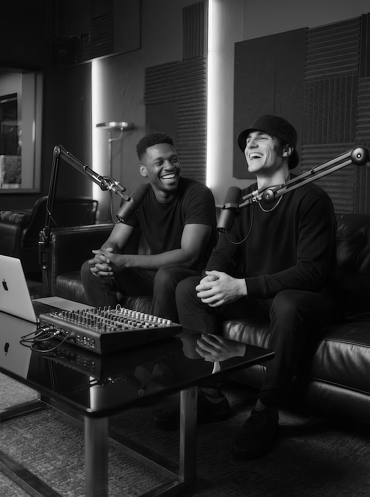
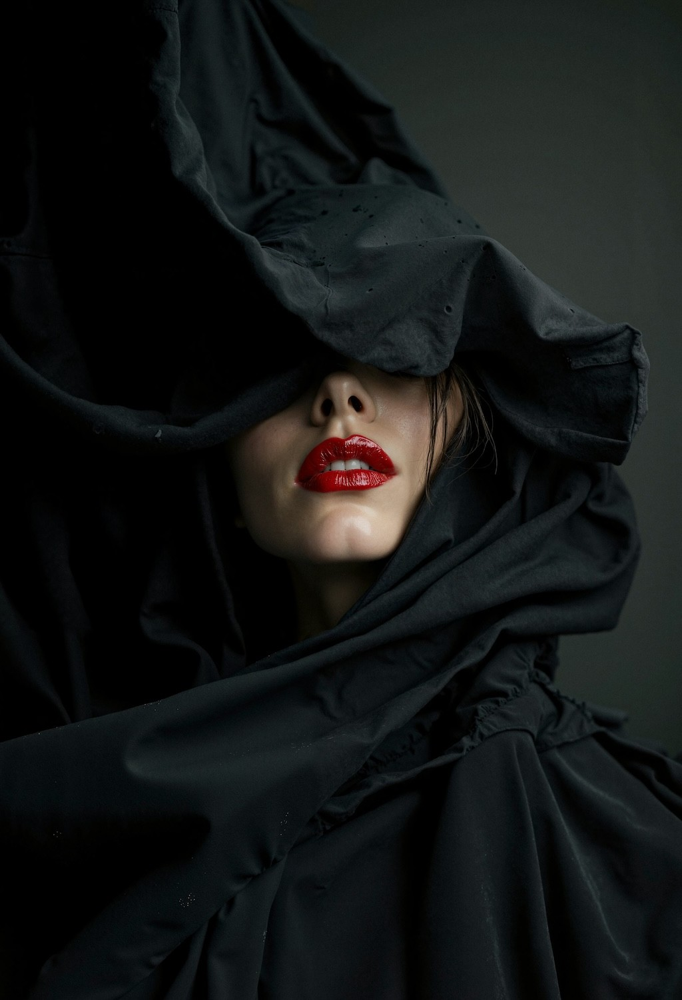

Art is a controlled interruption. A practice of catching the moment before it disappears.
I work across image, object, motion, and sound to trace the shape of what doesn't sit still.
It isn't a portfolio.
It's the place where the work stays honest. An ongoing record of what I make when thought moves faster than structure.




INDX // Conceptual — Revision Neue 7.6
Perspective
Not the truth
Pages become places worth lingering in, and issues become experiences people anticipate, keep, and share. I work between order and interruption.
Exploration Phase — Source: Field Notes · Module A.1
Some pieces settle.
Some don't.
Both reveal something the finished version can't.
Modern Rituals
Study — 04.13 · Selected Work
Lines become signals. Surfaces become stories.Structure argues with impulse until both learn to stand still. Grids set the pace. Margins hold the quiet.




The archive of everything I can't keep in one place.
Visual Experiments
Studies in image, light, and distortion. Tests that don't follow rules. Pieces built from instinct, error, and the urge to see what happens next.
Form & Function
Objects, systems, and shapes shaped with intention. Where utility meets the strange logic of making things that want to be held.
Sound & Motion
Moving images, rhythm studies, and audiovisual fragments. Work that refuses to sit still and asks to be felt as much as seen.
Written Fragments
Poems, lyrics, and unfinished lines. The quiet residue of everything else — caught before it changes its mind.
Things I Can't Explain
Creative ideas that arrived uninvited. Kept not because they make sense, but because they won't leave.

Illusion · Latency · Perspective · Control
Embracing
the Unknown
Patterns emerge. Friction creates meaning. Signals form. Surfaces respond.

What holds up is what matters. I follow ideas into places that don't have names yet.
Studio Chat
with Daniel Moore
Recorded at Cafe OTO, London on 24 November 2023.
Modus Vivendi
by Adam Knoxville
A delicate balance of stillness and movement, presence and absence. It captures bodies in transformation, suspended in quiet resistance. Showing until 10 May.

Contemporary / Motion Concept
AK 1.0
2024 — 2025
"Whether on paper or pixels, the goal is constant — design that disappears as the story appears, letting the work speak without shouting for attention." — AK

I make work across image, form, motion, and text.
Most projects start with a rule. Experience triggers the next step.
I'm a UK-based visual artist. My practice is driven by experiments, systems, and iteration. Some work resolves quickly, others evolve over time.
Things I Do
- Visual Experiments
- Form & Function
- Sound Design
- Motion Graphics
- Written Fragments
- Installation Studies
- Storyboards
- Visual Scripts